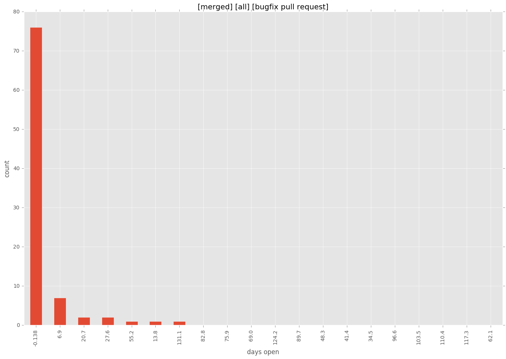
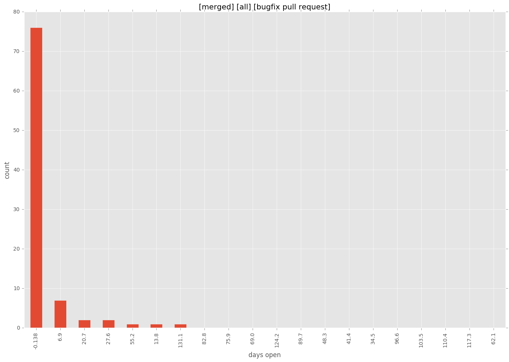

total issue counts
unknown: 3
feature pull request: 23
docs report: 2
pullrequest: 184
docs pull request: 3
bugfix pull request: 155
feature idea: 13
issue: 110
new plugin: 1
bug report: 94
issue history

pullrequest history
days open by issue type
bugfix pull request
count: 242
std: 33.4969768882
min: 0
max: 336
median: 1.0
mean: 9.35537190083
all
count: 374
std: 91.6061205573
min: 0
max: 761
median: 1.0
mean: 30.0481283422
pullrequest
count: 0
std: nan
min: nan
max: nan
median: nan
mean: nan
docs pull request
count: 6
std: 51.6475233353
min: 0
max: 101
median: 2.0
mean: 34.3333333333
docs report
count: 1
std: nan
min: 0
max: 0
median: 0.0
mean: 0.0
feature pull request
count: 28
std: 90.2163478422
min: 0
max: 291
median: 44.5
mean: 81.7857142857
feature idea
count: 6
std: 270.178767979
min: 0
max: 578
median: 147.0
mean: 233.833333333
issue
count: 0
std: nan
min: nan
max: nan
median: nan
mean: nan
new plugin
count: 1
std: nan
min: 13
max: 13
median: 13.0
mean: 13.0
bug report
count: 86
std: 143.800394129
min: 0
max: 761
median: 2.0
mean: 58.8488372093
closures grouped by total days open

 
